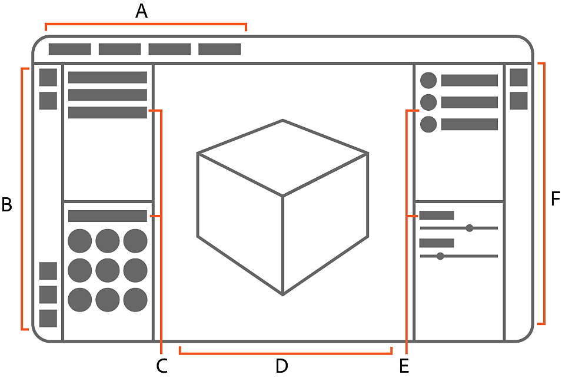

Sampler's workspace is made up of the 2D and 3D viewports, the left and right Sidebars, and a collection of panels. Each panel is dedicated to a specific purpose, so different panels are useful during different parts of the creative process.
The workspace is where you will spend most of your time in Sampler. By default the workspace consists of six areas:
A. The Application menu bar shows the current project name. It also holds the File, Edit, Window, Help, and License menus.
B. The Left sidebar holds shortcuts to Quick actions and certain tools, as well as the Generative, Shader settings, and Channel settings panels.
C. The Project and Assets panels.
D. The 2D and 3D Viewports displays the asset you're currently working on.
E. The Layers and Properties panels.
F. The Right sidebar gives access to the Exposed parameters, Physical size, Metadata, and Export panels.
The Application menus are covered in more detail below. Panels, the Viewport and the sidebars each have their own articles.

Sampler's workspace is fully customizable, so you can find a layout that works best for you. If you ever want to reset the panels to the default layout, use Window > Reset to default layout.
Click and drag the title of a panel to start moving it.
You can dock a panel on the edges of the viewport or other panels: drag the panel over the edge where you'd like it to be docked and a blue highlight guide will appear. When you see the line appear, drop the panel to dock it.
Use the X at the upper right of a panel to close it. Closed panels are stored in the sidebars.
To open a panel again, click the relevant icon for the panel in either the left or right sidebar. This opens the panel temporarily. Drag the panel out to keep it open permanently.
The Left Sidebar holds the following panels when they're closed:
The Right sidebar holds the following panels when they're closed:
The Application menu bar shows the current project name. It also holds the File, Edit, Window, Help, and License menus.
Use the File menu to create a new project, open an existing project, or save or export your current project.
Use the Edit menu to undo and redo actions or access your preferences. Learn more about Sampler's Preferences here.
Use the Window menu to reset your workspace to the default layout.
Use the Help menu to learn more about Sampler or find out how to fix issues.
| Tutorials | Opens Sampler's tutorials page. Tutorials cover everything from the basics of using Sampler to advanced techniques that can accelerate your work. |
| Documentation | See the documentation. The documentation provides information on all aspects of using Sampler. |
| Python API Documentation | Learn how to use Sampler's Python API to automate tasks. |
| Keyboard Shortcuts | See a full list of keyboard shortcuts. Using shortcuts can help you work faster than relying on your cursor alone. |
| Welcome | Open the Welcome window to learn more about what's possible in Sampler. |
| What's new? | Open the What's new window to see what's changed in the most recent release of Sampler. |
| Release notes | See what changed in recent versions of Sampler. |
| Forum | Open the forums to join the conversation with other members of the Substance 3D Sampler community, or submit your own posts and suggestions. |
| Report a bug | Report a problem with Sampler. |
| Export log | This can be useful for troubleshooting issues that might occur while using Sampler. |
| Substance 3D assets | Open Substance Source for access to a huge library of materials and other assets created and curated by the Substance 3D team. |
| Substance 3D community assets | Open Substance Share for access to a library of materials and other assets created by members of the Substance 3D community. |
| Hardware information | See information about your devices hardware. |
| About Sampler | See information about your installed version of Sampler. |
From the License menu, use Manage my account to access your Adobe account. Sign out of your Adobe account by clicking sign out.